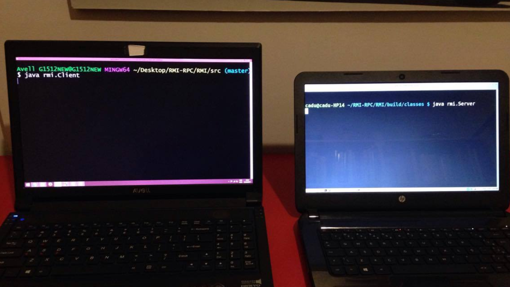

Motivações e Objetivos
Ao realizarmos trabalhos em pequena escala a fim de conhecermos melhor o sistema RMI, normalmente utilizamos a mesma máquina para atuar, simultaneamente, como cliente e servidor. Afinal, ao estudarmos sobre o tema, nem sempre temos acesso a diferentes computadores que nos possibilitem realmente perceber como uma invocação remota se comporta, incluindo seu tempo de execução e sua tolerânica a falhas.
Com estes princípios em mente, utilizaremos esta seção para submeter duas máquinas (conectadas à mesma rede local) a chamadas RMI, a fim de examinar o comportamento do sistema como um todo e observar suas respostas a certas situações adversas.

Velocidade
Ao